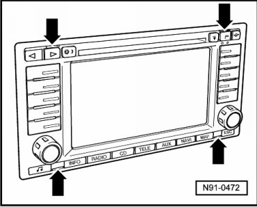
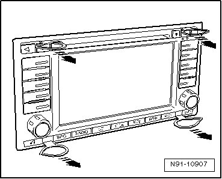
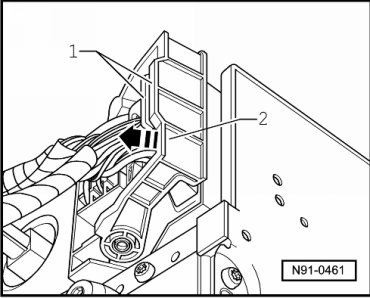
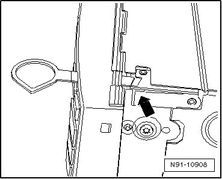

Radio Navigation System 2 with 6.5 inch Color Display
Radio Navigation System 2 with 6.5 inch Color Display
• Replacement part number for complete radio navigation system is located on a sticker on the radio navigation system housing.
• Ask the customer for the radio navigation system code number before removing. If radio navigation system is replaced, always activate anti-theft coding. Refer to --> Owner's Manual. The customer must be informed of the new code number.
• If a radio navigation system from one vehicle is to be installed in another vehicle, then always make sure that radio navigation systems of both vehicles have the same replacement part number. Otherwise navigation system will malfunction since the setting of the rotation angle sensor in radio navigation system does not match the vehicle.
Special tools, testers and auxiliary items required
• Radio Removal Tool (T10057)
Removing
Before starting repair work, perform the following:
- Switch off ignition, switch off all electrical consumers and remove ignition key.
Now, perform the following work procedure:
- Insert Radio Removal Tool (T10057) into release openings - arrows - until they engage.

Top L - upper and lower left.
Top R - upper and lower right.
- Remove radio navigation system from instrument panel using removal tool gripping rings - arrows -.

- Press connector lock - 1 - together and then pull catches up in direction of arrow - 2 -.

- Release and disconnect remaining electrical connectors.
To remove tools:
- Press spring - arrow - and remove radio removal tool.

Installing
- Reconnect connectors on radio navigation system.
- Slide radio navigation system straight into instrument panel until it engages in installation bracket.
• While sliding in the radio navigation system, do not press on the display or control buttons under any circumstances because the radio navigation system may be damaged by doing this.
- Check coding of radio unit and code radio unit again if necessary.
- Coding of radio system in radio navigation system. Refer to --> [ Radio Components, Adapting ] Programming and Relearning.
- Coding of navigation system in radio navigation system. Refer to --> [ Navigation System Components, Adapting ] Programming and Relearning.